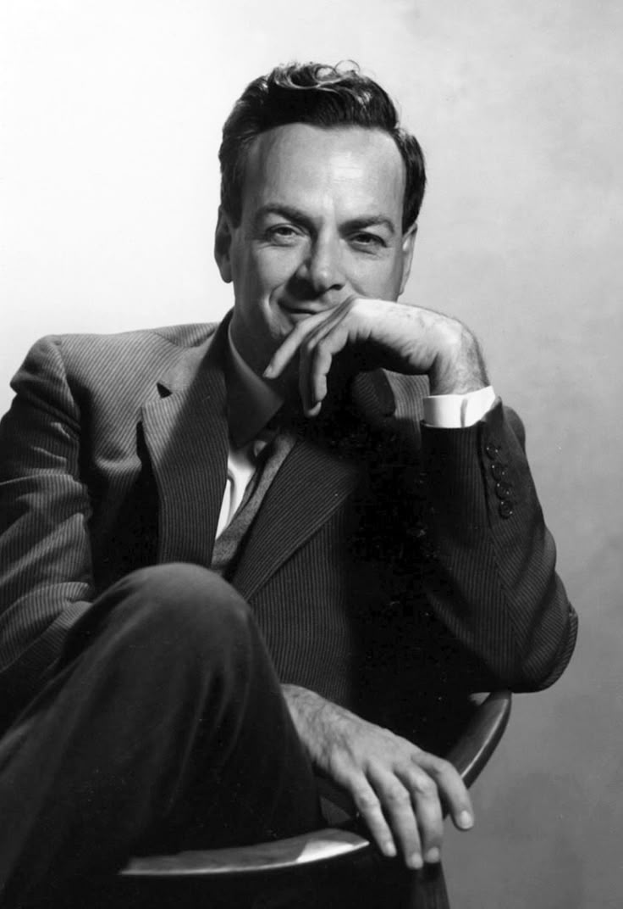

Sumber- Richard Feynman (1918–1988) Richard Feynman adalah salah satu fisikawan teoretis paling berpengaruh di abad ke-20. Ia terkenal karena kontribusinya dalam elektrodinamika kuantum, gaya mengajarnya yang unik, serta kepribadiannya yang eksentrik dan humoris.
Nama lengkap: Richard Phillips Feynman
Lahir: 11 Mei 1918 di Queens, New York, AS Orang tua: Melville Feynman (salesman) dan Lucille Phillips (ibu rumah tangga)
Pendidikan: Massachusetts Institute of Technology (MIT) – Gelar Sarjana Fisika Princeton University – Gelar Ph.D. dalam Fisika Di Princeton, ia diawasi oleh John Archibald Wheeler dan dikenal karena kecerdasannya yang luar biasa.
Selama Perang Dunia II, Feynman bekerja di Proyek Manhattan, program rahasia AS untuk mengembangkan bom atom Ia bertugas dalam perhitungan nuklir dan pengamanan desain senjata nuklir di Los Alamos Sering dikenal sebagai "orang iseng" di Los Alamos karena sering membobol brankas hanya untuk menguji keamanan laboratorium
1. Elektrodinamika Kuantum (QED)
Feynman mengembangkan diagram Feynman, alat visual untuk memahami interaksi partikel dalam mekanika kuantum Teorinya menyempurnakan pemahaman tentang bagaimana elektron dan foton berinteraksi Menerima Nobel Fisika tahun 1965, bersama Julian Schwinger dan Sin-Itiro Tomonaga
2. Superfluiditas dan Helium Cair
Menjelaskan fenomena bagaimana helium cair dapat mengalir tanpa hambatan di suhu sangat rendah
3. Feynman Lectures on Physics
Serangkaian kuliah yang menjadi buku fisika paling terkenal di dunia Digunakan oleh mahasiswa fisika hingga sekarang
4. Komputasi Kuantum
Salah satu ilmuwan pertama yang mengusulkan gagasan komputasi kuantum
Tahun 1986, pesawat ulang-alik Challenger meledak setelah peluncuran
Feynman menjadi anggota komisi penyelidikan dan menemukan penyebab kecelakaan: Cincin O-ring di roket bahan bakar tidak berfungsi dengan baik pada suhu rendah Ia membuktikannya secara langsung dalam siaran TV dengan mencelupkan O-ring ke dalam air es, menunjukkan bagaimana elastisitasnya hilang
Jago bermain bongo, sering tampil di acara kampus
Suka mempelajari bahasa asing, termasuk Portugis
Pernah mempelajari seni menggambar, karyanya bahkan dipamerkan
Suka melakukan eksperimen iseng, seperti membobol brankas di Los Alamos
Meninggal dunia: 15 Februari 1988 akibat kanker perut
Dikenang sebagai ilmuwan jenius yang juga humoris, pembelajar seumur hidup, dan pengajar luar biasa Feynman tidak hanya dikenal karena kontribusinya dalam fisika, tetapi juga sebagai tokoh yang menginspirasi banyak orang untuk berpikir kritis dan tetap penasaran terhadap dunia.